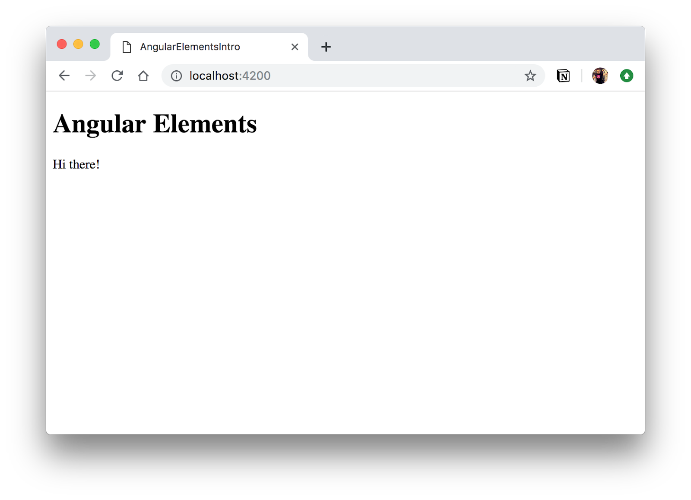
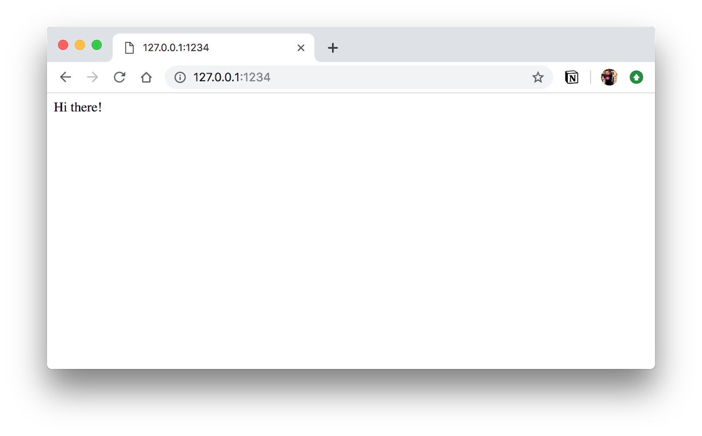
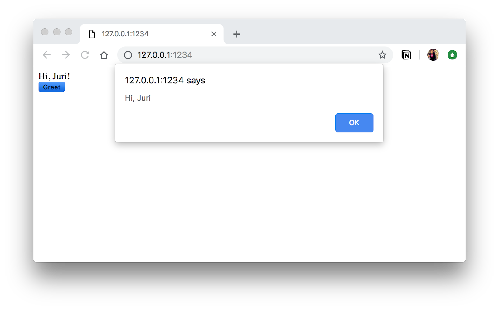

In this codelab we're going to explore Angular Elements, a new way for creating Custom Elements out of plain normal Angular Components.
What you'll learn
- How to setup your Angular project to create and run Angular Elements
- How to convert an Angular component into an Angular Element
- How to create a small script for building an Angular Element into a standalone library
What you'll need
- A browser, ideally Chrome
- VSCode (or any other code editor of your preference with TypeScript & Angular support)
Download the starter project:
Unzip the code and open it with Visual Studio Code (or your respective code editor of choice).
Install npm packages and start the app
After unpacking the files, open up a terminal (you can also do that from within Visual Studio Code) at the location where you unzipped your files.
Execute npm install (from your command line) to download all the necessary packages.
Run the app
Once installed, open your terminal (also from within VSCode) and type
$ npm startYou should ideally see something like this in your browser:

As a first step we need to setup our project to use the @angular/elements package. For doing so, we can use the ng add CLI command.
$ npm i @angular/cliNext we install some necessary polyfills:
$ npm i @webcomponents/webcomponentsjsAdd the following import to the end of the polyfills.ts file:
import '@webcomponents/webcomponentsjs/custom-elements-es5-adapter.js';Currently we have a GreeterComponent registered as Angular element and referenced in the app.component.html. Let's try to dynamically add the greeter component to the template, rather than adding it directly.
For that purpose, change the app.component.html template to the following:
<h1>Angular Elements</h1>
<div id="container"></div>
<button (click)="onAddGreeter()">Add greeter</button>In the onAddGreeter() function, use the native DOM API to grab an instance of the #container and add the "<do-greet></do-greet>" tag. It will look something like this:
const container = document.getElementById('container');
container.innerHTML = '<do-greet></do-greet>';If you run the app and click on the button, the do-greet is inserted correctly (as can be seen from the browser's devtools), however it won't be rendered.

The reason is that Angular doesn't automatically interpret components that are inserted dynamically at runtime into the HTML (unless we instantiate them using the ComponentFactory etc..). With Angular Elements it is possible however.
Register GreeterComponent as Angular Element
To register a component as an Angular Element, we go to the app.module.ts and register the GreeterComponent as an entryComponent on our @NgModule.
Next we import the createCustomElement function from @angular/elements and register our GreeterComponent.
export class AppModule {
constructor(injector: Injector) {
const el = createCustomElement(GreeterComponent, { injector: injector });
customElements.define('do-greet', el);
}
}Re-running the app again, after the button-click the <do-greet> component should be inserted and visualized properly.

So far we have converted our GreeterComponent to an Angular Element. That allows us to use it in a very dynamic way inside our Angular app. It won't be usable outside of Angular, say, in a static HTML page. Let's adjust our build process to make that happen.
First of all, let's refactor our current setup. We don't need the AppComponent, so let's just get rid of it. In the end we should just have the app.module and greeter.component files.

Note, we also removed the bootstrap property from our @NgModule. This is because our compiled Angular Element needs to auto-bootstrap. For that purpose, we add the ngOnBootstrap() function to our AppModule and move the custom element registration into it.
export class AppModule {
constructor(private injector: Injector) {}
ngDoBootstrap() {
const el = createCustomElement(GreeterComponent, {
injector: this.injector
});
customElements.define('do-greet', el);
}
}Create a new file build.js at the root of the project and paste the following content
const fs = require('fs-extra');
const concat = require('concat');
(async function build() {
const files = [
'./dist/angular-elements-intro/runtime.js',
'./dist/angular-elements-intro/runtime.js',
'./dist/angular-elements-intro/polyfills.js',
'./dist/angular-elements-intro/main.js'
];
await fs.ensureDir('demo');
await concat(files, 'demo/ngelements.js');
})();When we execute ng build --prod, we get a series of files. When deploying an Angular Element however, we want to have a single JavaScript file we can load into the browser.
Change the current build script in the package.json to the following:
"build": "ng build --prod --output-hashing=none && node build.js",Execute "npm run build" and make sure you get a ngelements.js in the demo directory.
Run the Custom Element
We're now ready to run the custom element. Create an index.html file in the demo folder and load the ngelements.js.
<html>
<body>
<do-greet></do-greet>
<script src="./ngelements.js"></script>
</body>
</html>There is already a preconfigured script that launches live-server in your package.json that serves the demo directory on localhost:1234. Run it with
$ npm run start:demo

Congrats, you're running your Angular Component as standalone custom element in a static HTML page!
First of all, add an @Input() name as well as a @Output() greet to our GreeterComponent.
@Component({
// selector: 'do-greet',
template: `
<div>Hi, {{ name }}!</div>
<button (click)="doGreet()">Greet</button>
`,
styles: []
})
export class GreeterComponent implements OnInit {
@Input() name;
@Output() greet = new EventEmitter();
constructor() {}
doGreet() {
this.greet.emit(`Hi, ${this.name}`);
}
ngOnInit() {}
}Recompile our component and launch the demo/index.html page. It should now be possible to pass in our name to the custom element:
<html>
<body>
<do-greet name="Juri"></do-greet>
<script src="./ngelements.js"></script>
</body>
</html>As an exercise, try to register to the "greet" output event we defined and log the result to the console of the browser.
